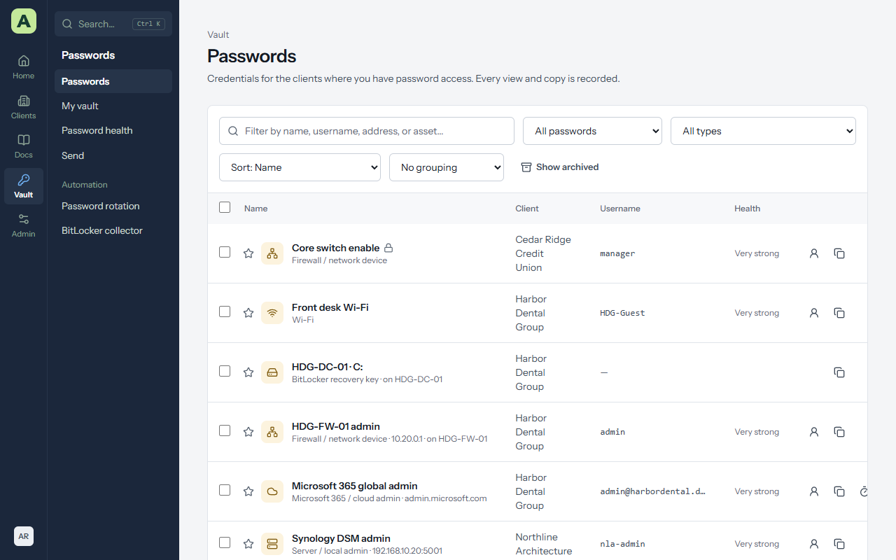
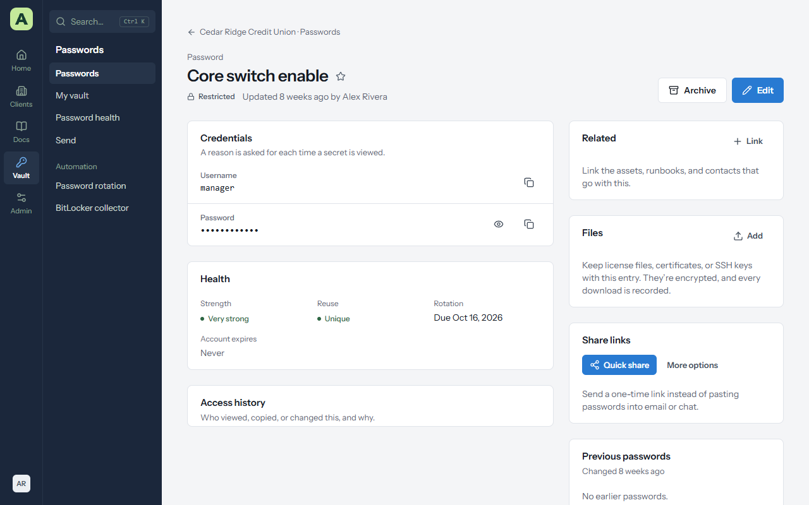
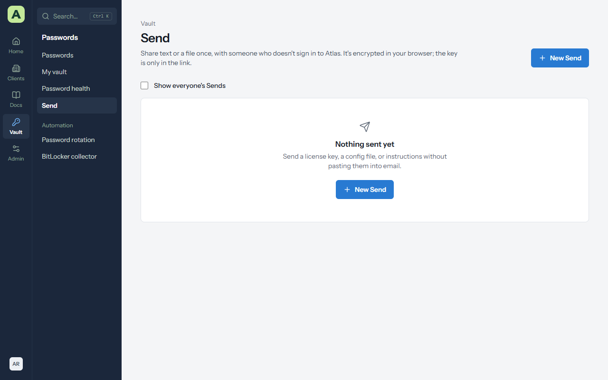
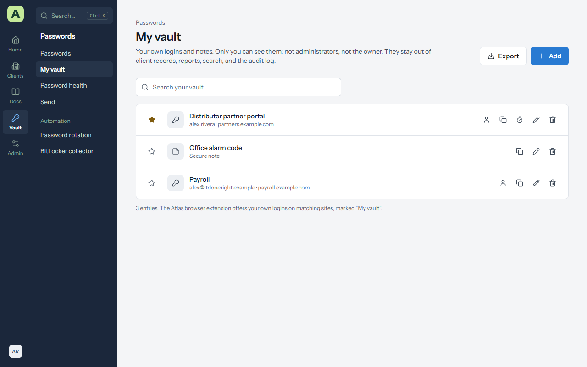
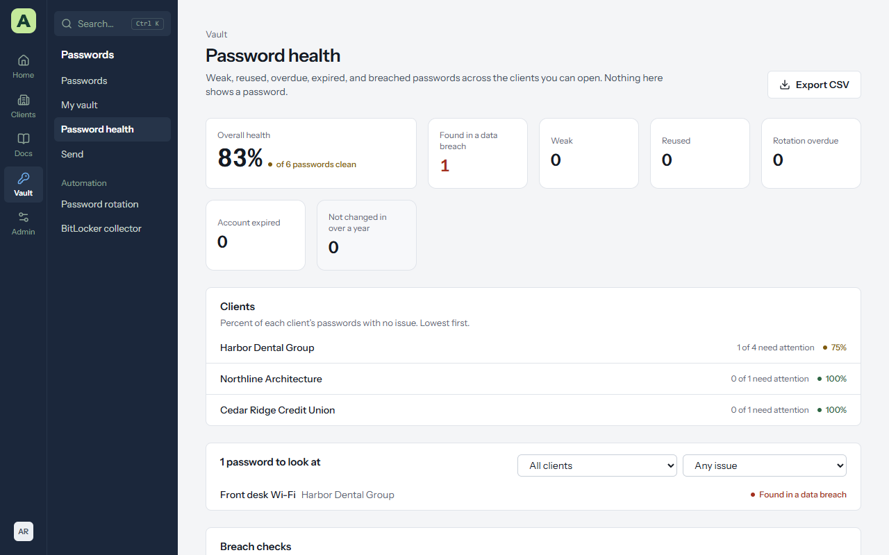

Chapter 5
Passwords
Every client has a vault for its logins, secure notes, one-time codes and BitLocker recovery keys. Passwords are encrypted before they're stored, and every time anyone sees, copies, changes or shares one, Atlas records it.
The vault


Vault → Passwords lists every password you can open. A client's Passwords tab lists just theirs, with Folders down the side. On each row you can copy the username, the password or the one-time code without opening the entry.
The star keeps a password at the top of the list. Tick several entries to archive or restore them together, change how often they rotate, or start or stop sharing them with the client.
Reveal and copy a password


- The eye shows the password. Copy password puts it on the clipboard, and Atlas clears the clipboard after 30 seconds.
- The six-digit one-time code for accounts with an authenticator updates live. Copy one-time code copies it.
- Some clients require a reason first. Atlas asks Why do you need this password? and keeps your answer with the record of the reveal. A ticket number is a good reason.
Every reveal, copy, change and share appears under Access history on the entry, and in Admin → Security log → Vault access.
Add a password
- On the client's Passwords tab, choose Add password.
- Choose the Type: a login, a secure note, or a BitLocker recovery key.
- Fill in the Name, username, password and Website or address. The address is what the browser extension matches against.
- Use the generator for a random password or a passphrase. Presets remember the lengths and character sets your team uses.
- If the account has two-step sign-in, paste its Authenticator setup key (TOTP) so Atlas can show the one-time code.
- Optionally set Rotate every (how often it should change), Account expires, a Folder, Notes (encrypted), extra fields with Add a field, and the assets it belongs to under Linked assets.
- Choose Save.
Atlas warns you when a password is weak or already used elsewhere.
A Wi-Fi password's join code
A password in the Wi-Fi category shows its username as the Network name, and has a Join this network card underneath: a code that phones scan with their camera to join without typing the password.
Choose Show the code. The password is revealed the usual way: it's recorded in the access history, and a reason is asked for where the client requires one. The code appears beside the network's details. Change the Security setting for a WEP or open network, and tick Hidden network for one that doesn't broadcast its name, so phones know to look for it.
- Print prints a card on its own, with the network name, the code and (unless you untick it) the password underneath, ready to frame for a waiting room.
- PNG downloads the code as a picture.
Like a shown password, the code hides again after a minute.
Change a password and its history
Edit the entry and enter the new password. The old one moves to Previous passwords, with when it changed, so you can still find it if the change didn't take everywhere.
If the entry has Rotate every set, it appears on the Expirations page when the change is due, and in expiry alerts.
Restrict an entry to named people
Some passwords should only be open to a few people: a domain admin, a payroll login. Edit the entry and tick Restricted, then tick the groups and people under Who can use it. Everyone else can't see the entry exists.
By default, administrators still see restricted entries. The owner can change that in Vault policies, so restricted means only the people listed. See People and access.
Share with the client's own staff
Tick Share with the client's own accounts on an entry so the client's own contacts can see it when they sign in to Atlas, read-only. Each view is recorded for you.
Share with a one-time link
For someone outside Atlas, send a link instead of pasting a password into email or chat.
- Quick share makes a link that opens once, within 24 hours, and copies it.
- More options lets you choose how many times it Can be opened and when it Expires after.
The password is encrypted in your browser, and the key is only in the part of the link after the
#, which never reaches the server. Send the link through a different channel from the username.
Share links on the entry lists the links you've made, and you can revoke any of them.
Send text or a file once
Vault → Send is for anything else you need to hand over once: a licence key, a config file, instructions.
- Choose New Send, then text or a file.
- Give it a Name (only you see it), choose how many times it Can be opened and when it Expires after.
- Copy the Send link and give it to the recipient.
Like share links, it's encrypted in your browser before it's uploaded, and Atlas never has the key. Administrators can tick Show everyone's Sends to see what's outstanding.


My vault


Vault → My vault is a private place for logins and notes that are yours alone: your own vendor portal account, your payroll login, a door code.
- Only you can see it. Not administrators, not the owner. It isn't attached to any client and doesn't appear in search, reports, password health, exports or the audit log.
- Add a login or a secure note. The generator and one-time codes work the same as in a client's vault.
- In the browser extension, your own logins are offered on matching sites, marked My vault.
- Deleting is permanent. There is no archive and no history.
- Move to a client turns an entry that belongs to the team into one of a client's passwords. It leaves your vault and can't be moved back.
- Export downloads your vault as a CSV file in the layout Bitwarden uses. Atlas asks for your password first. The file holds every password in plain text, so import it and delete it.
The owner can turn personal vaults off for everyone in Vault policies. Nothing is deleted, and everything comes back if they're turned on again.
Password health


Vault → Password health reports weak, reused, overdue, expired, old and breached passwords across the clients you can open, with a score for each client, lowest first. Filter by problem, open an entry to fix it, or export the list as CSV. Nothing on the page shows a password.
Breached passwords are found with Have I Been Pwned. Only the first five characters of a scrambled (SHA-1) fingerprint leave the server, and Atlas stores only a count. An administrator can untick Check passwords against known breaches on the same page for servers without internet access.
BitLocker recovery keys
BitLocker keys are kept as their own type of entry, and the 48-digit key is checked for typos as you type it. They arrive in three ways:
- By hand: Add password, then the BitLocker type.
- The BitLocker collector: a script your RMM runs on each Windows machine reads its BitLocker status and recovery keys and sends them to Atlas. See Data and integrations.
- ConnectWise RMM: if your keys are already in a device custom field, the sync's BitLocker keys option saves them to the vault.
A machine's asset page shows a BitLocker panel with each drive's protection, and its keys are under Related.
Automatic password rotation
Administrators can have Atlas change local administrator and Active Directory service account passwords on a schedule, through ConnectWise RMM. The vault only changes after the device confirms the new password. See Data and integrations.